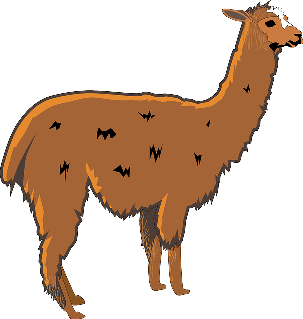

llama
La llama (Lama glama) es un mamífero artiodáctilo doméstico de la familia Camelidae, abundante en la Puna o Altiplano de los Andes de Perú, Bolivia, Chile, Ecuador y Argentina.1 Fue creado por los pueblos andinos nativos mediante selección artificial a partir del guanaco salvaje que fue domesticado y del cual, por lo tanto, la llama deriva. Según recientes estudios de ADN,
perro

El perro (Canis lupus familiaris),también llamado perro doméstico o can,4 y coloquialmente llamado chucho o tuso;6 es un mamífero omnívoro de la familia de los cánidos, que constituye una subespecie del lobo (Canis lupus). En 2001, se estimaba que había 400 millones de perros en el mundo.7 Su tamaño o talla, su forma y pelaje es muy diverso según la raza. Posee un oído y olfato muy desarrollados, siendo este último su principal órgano sensorial. Su longevidad media es de unos 13 a 15 años, aunque las razas pequeñas puede alcanzar hasta 20 años o más, mientras que las razas gigantes solo viven 9 o 10 años.